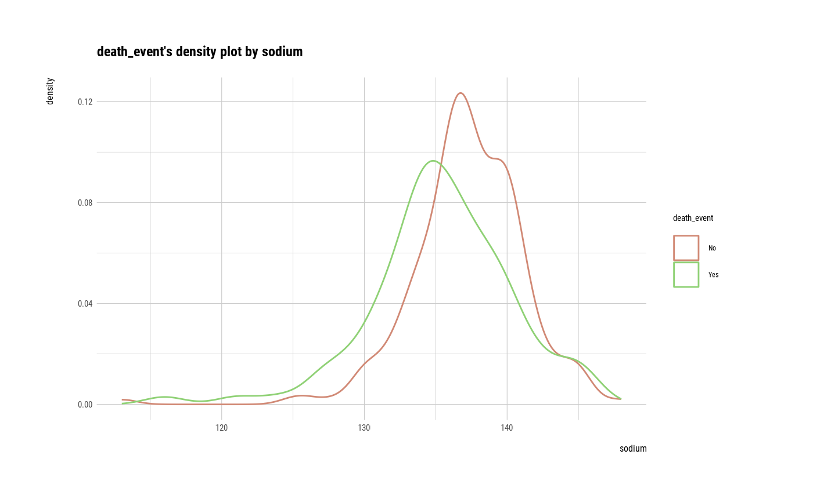
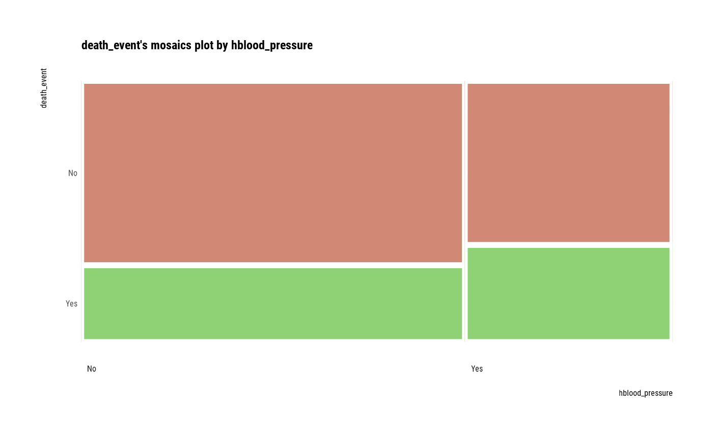
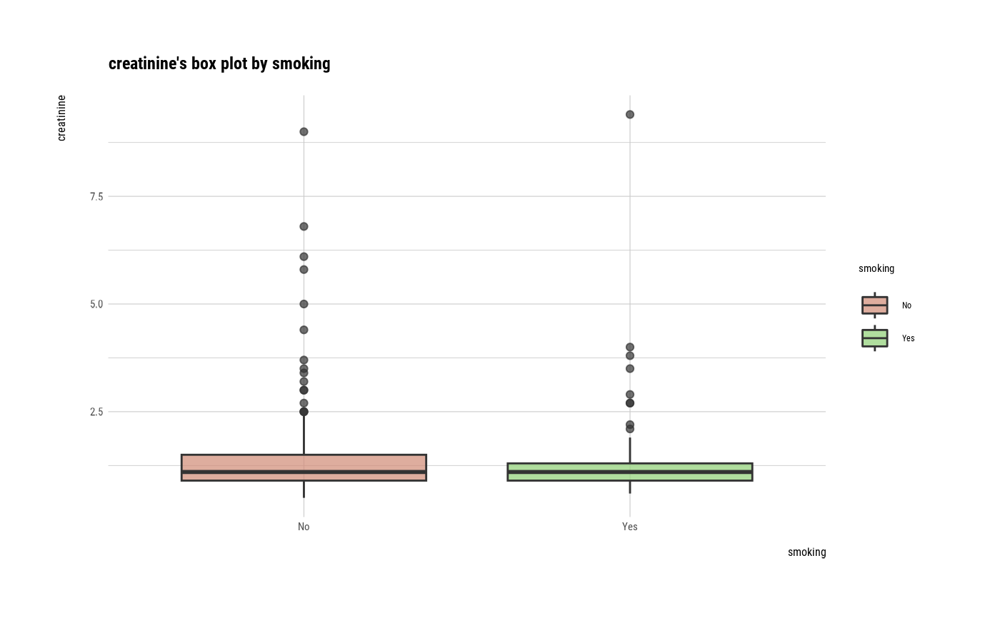

Visualize four kinds of plot by attribute of relate class.
# S3 method for relate plot( x, model = FALSE, hex_thres = 1000, pal = c("#FFFFB2", "#FED976", "#FEB24C", "#FD8D3C", "#FC4E2A", "#E31A1C", "#B10026"), typographic = TRUE, ... )
Arguments
| x | an object of class "relate", usually, a result of a call to relate(). |
|---|---|
| model | logical. This argument selects whether to output the visualization result to the visualization of the object of the lm model to grasp the relationship between the numerical variables. |
| hex_thres | an integer. Use only when the target and predictor are numeric variables. Used when the number of observations is large. Specify the threshold of the observations to draw hexabin plots that are not scatterplots. The default value is 1000. |
| pal | Color palette to paint hexabin. Use only when the target and predictor are numeric variables. Applied only when the number of observations is greater than hex_thres. |
| typographic | logical. Whether to apply focuses on typographic elements to ggplot2 visualization. The default is TRUE. if TRUE provides a base theme that focuses on typographic elements using hrbrthemes package. |
| ... | arguments to be passed to methods, such as graphical parameters (see par). only applies when the model argument is TRUE, and is used for ... of the plot.lm() function. |
See also
Examples
# Generate data for the example carseats <- ISLR::Carseats carseats[sample(seq(NROW(carseats)), 20), "Income"] <- NA carseats[sample(seq(NROW(carseats)), 5), "Urban"] <- NA # If the target variable is a categorical variable categ <- target_by(carseats, US) # If the variable of interest is a numerical variable cat_num <- relate(categ, Sales) cat_num#> # A tibble: 3 x 27 #> variable US n na mean sd se_mean IQR skewness kurtosis p00 p01 p05 #> <chr> <fct> <dbl> <dbl> <dbl> <dbl> <dbl> <dbl> <dbl> <dbl> <dbl> <dbl> <dbl> #> 1 Sales No 142 0 6.82 2.60 0.218 3.44 0.323 0.808 0 0.468 3.25 #> 2 Sales Yes 258 0 7.87 2.88 0.179 4.23 0.0760 -0.326 0.37 1.65 3.15 #> 3 Sales total 400 0 7.50 2.82 0.141 3.93 0.186 -0.0809 0 0.906 3.15 #> # … with 14 more variables: p10 <dbl>, p20 <dbl>, p25 <dbl>, p30 <dbl>, p40 <dbl>, #> # p50 <dbl>, p60 <dbl>, p70 <dbl>, p75 <dbl>, p80 <dbl>, p90 <dbl>, p95 <dbl>, #> # p99 <dbl>, p100 <dbl>summary(cat_num)#> variable US n na mean sd #> Length:3 No :1 Min. :142.0 Min. :0 Min. :6.823 Min. :2.603 #> Class :character Yes :1 1st Qu.:200.0 1st Qu.:0 1st Qu.:7.160 1st Qu.:2.713 #> Mode :character total:1 Median :258.0 Median :0 Median :7.496 Median :2.824 #> Mean :266.7 Mean :0 Mean :7.395 Mean :2.768 #> 3rd Qu.:329.0 3rd Qu.:0 3rd Qu.:7.682 3rd Qu.:2.851 #> Max. :400.0 Max. :0 Max. :7.867 Max. :2.877 #> se_mean IQR skewness kurtosis p00 #> Min. :0.1412 Min. :3.442 Min. :0.07603 Min. :-0.32638 Min. :0.0000 #> 1st Qu.:0.1602 1st Qu.:3.686 1st Qu.:0.13080 1st Qu.:-0.20363 1st Qu.:0.0000 #> Median :0.1791 Median :3.930 Median :0.18556 Median :-0.08088 Median :0.0000 #> Mean :0.1796 Mean :3.866 Mean :0.19489 Mean : 0.13350 Mean :0.1233 #> 3rd Qu.:0.1988 3rd Qu.:4.077 3rd Qu.:0.25432 3rd Qu.: 0.36344 3rd Qu.:0.1850 #> Max. :0.2184 Max. :4.225 Max. :0.32308 Max. : 0.80776 Max. :0.3700 #> p01 p05 p10 p20 p25 #> Min. :0.4675 Min. :3.147 Min. :3.917 Min. :4.754 Min. :5.080 #> 1st Qu.:0.6868 1st Qu.:3.148 1st Qu.:4.018 1st Qu.:4.910 1st Qu.:5.235 #> Median :0.9062 Median :3.149 Median :4.119 Median :5.066 Median :5.390 #> Mean :1.0072 Mean :3.183 Mean :4.073 Mean :5.051 Mean :5.411 #> 3rd Qu.:1.2771 3rd Qu.:3.200 3rd Qu.:4.152 3rd Qu.:5.199 3rd Qu.:5.576 #> Max. :1.6480 Max. :3.252 Max. :4.184 Max. :5.332 Max. :5.763 #> p30 p40 p50 p60 p70 #> Min. :5.306 Min. :5.994 Min. :6.660 Min. :7.496 Min. :7.957 #> 1st Qu.:5.587 1st Qu.:6.301 1st Qu.:7.075 1st Qu.:7.787 1st Qu.:8.386 #> Median :5.867 Median :6.608 Median :7.490 Median :8.078 Median :8.815 #> Mean :5.775 Mean :6.506 Mean :7.313 Mean :8.076 Mean :8.740 #> 3rd Qu.:6.010 3rd Qu.:6.762 3rd Qu.:7.640 3rd Qu.:8.366 3rd Qu.:9.132 #> Max. :6.153 Max. :6.916 Max. :7.790 Max. :8.654 Max. :9.449 #> p75 p80 p90 p95 p99 #> Min. :8.523 Min. : 8.772 Min. : 9.349 Min. :11.28 Min. :13.64 #> 1st Qu.:8.921 1st Qu.: 9.265 1st Qu.:10.325 1st Qu.:11.86 1st Qu.:13.78 #> Median :9.320 Median : 9.758 Median :11.300 Median :12.44 Median :13.91 #> Mean :9.277 Mean : 9.665 Mean :10.795 Mean :12.08 Mean :13.86 #> 3rd Qu.:9.654 3rd Qu.:10.111 3rd Qu.:11.518 3rd Qu.:12.49 3rd Qu.:13.97 #> Max. :9.988 Max. :10.464 Max. :11.736 Max. :12.54 Max. :14.03 #> p100 #> Min. :14.90 #> 1st Qu.:15.59 #> Median :16.27 #> Mean :15.81 #> 3rd Qu.:16.27 #> Max. :16.27plot(cat_num)#> ShelveLoc #> US Bad Good Medium #> No 34 24 84 #> Yes 62 61 135summary(cat_cat)#> Call: xtabs(formula = formula_str, data = data, addNA = TRUE) #> Number of cases in table: 400 #> Number of factors: 2 #> Test for independence of all factors: #> Chisq = 2.7397, df = 2, p-value = 0.2541plot(cat_cat)##--------------------------------------------------- # If the target variable is a categorical variable num <- target_by(carseats, Sales) # If the variable of interest is a numarical variable num_num <- relate(num, Price) num_num#> #> Call: #> lm(formula = formula_str, data = data) #> #> Coefficients: #> (Intercept) Price #> 13.64192 -0.05307 #>summary(num_num)#> #> Call: #> lm(formula = formula_str, data = data) #> #> Residuals: #> Min 1Q Median 3Q Max #> -6.5224 -1.8442 -0.1459 1.6503 7.5108 #> #> Coefficients: #> Estimate Std. Error t value Pr(>|t|) #> (Intercept) 13.641915 0.632812 21.558 <2e-16 *** #> Price -0.053073 0.005354 -9.912 <2e-16 *** #> --- #> Signif. codes: 0 ‘***’ 0.001 ‘**’ 0.01 ‘*’ 0.05 ‘.’ 0.1 ‘ ’ 1 #> #> Residual standard error: 2.532 on 398 degrees of freedom #> Multiple R-squared: 0.198, Adjusted R-squared: 0.196 #> F-statistic: 98.25 on 1 and 398 DF, p-value: < 2.2e-16 #>plot(num_num)#> Analysis of Variance Table #> #> Response: Sales #> Df Sum Sq Mean Sq F value Pr(>F) #> ShelveLoc 2 1009.5 504.77 92.23 < 2.2e-16 *** #> Residuals 397 2172.7 5.47 #> --- #> Signif. codes: 0 ‘***’ 0.001 ‘**’ 0.01 ‘*’ 0.05 ‘.’ 0.1 ‘ ’ 1summary(num_cat)#> #> Call: #> lm(formula = formula(formula_str), data = data) #> #> Residuals: #> Min 1Q Median 3Q Max #> -7.3066 -1.6282 -0.0416 1.5666 6.1471 #> #> Coefficients: #> Estimate Std. Error t value Pr(>|t|) #> (Intercept) 5.5229 0.2388 23.131 < 2e-16 *** #> ShelveLocGood 4.6911 0.3484 13.464 < 2e-16 *** #> ShelveLocMedium 1.7837 0.2864 6.229 1.2e-09 *** #> --- #> Signif. codes: 0 ‘***’ 0.001 ‘**’ 0.01 ‘*’ 0.05 ‘.’ 0.1 ‘ ’ 1 #> #> Residual standard error: 2.339 on 397 degrees of freedom #> Multiple R-squared: 0.3172, Adjusted R-squared: 0.3138 #> F-statistic: 92.23 on 2 and 397 DF, p-value: < 2.2e-16 #>plot(num_cat)